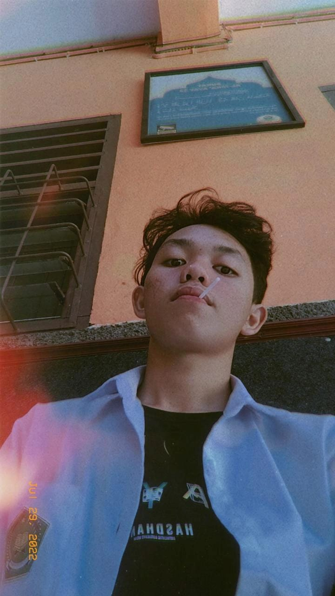

Foto Profil

📝Tentang Saya
Halo! Perkenalkan nama saya Muhammad Zidani Taqwa. Saya lahir di
Yogyakarta pada tanggal 19 November 2006. Saat ini saya sedang berkuliah prodi Sistem Informasi di sebuah
Universitas Muhammadiyah Sumatera Utara
Saya memiliki ketertarikan yang besar dalam bidang teknologi seperti AI dsb.
Saya selalu bersemangat untuk belajar hal-hal baru dan mengembangkan
keterampilan saya.
📋 Data Pribadi
- Nama Lengkap: Muhammad Zidani Taqwa Purba
- Tempat, Tanggal Lahir: Yogyakarta, 19 November 2006
- Alamat: Jl. Pembangunan
- Status: Belum Menikah
- Agama: Islam
- Kewarganegaraan: Indonesia
🎨Hobi & Minat
- Kecerdasan Buatan dan Teknologi
- Analisis data dan desain digital
- Tenis Meja
- Lari
- Traveling ke tempat-tempat baru
🎓Riwayat Pendidikan
-
SD Rahmat Islamiyah (2012 - 2018)
-
SMP Ma'had Muhammad Saman (2018 - 2021)
-
Mas Miftahussalam Medan (2021 - 2024)
-
Universitas Muhammadiyah Sumatera Utara (2024 - Sekarang)
💻Keterampilan
- Programming Languages: HTML, CSS, C++,
Python, Java
- Frameworks: React, Node.js, Express
- Database: MySQL, MariaDB
- Tools: VS Code, XAMPP, NetBeans, Linux
- Languages: Indonesia (Native), English (Advanced)
💼 Pengalaman Akademik
-
Mahasiswa Sistem Informasi - Semester 1
Membangun aplikasi web menggunakan PHP dan MySQL
-
Mahasiswa Sistem Informasi - Semester 2
Mengembangkan SPA menggunakan React dan Node.js
-
Mahasiswa Sistem Informasi - Semester 3
Memimpin tim development untuk proyek enterprise
🏆 Pencapaian
- Mendapatkan Sertifikat Dicoding - Belajar Penerapan Data Science dengan Microsoft Febric
- Mampu membuat ERD dan DFD untuk analisis sistem
- Dapat mengelola database dan membuat query SQL
📅 Jadwal Harian
| Waktu |
Kegiatan |
| 05.30 - 07.00 |
Bangun dan Persiapan Kuliah |
| 07.30 - 12.30 |
Kuliah |
| 13.00 - 14.00 |
Istirahat dan Makan Siang |
14.00 - 16.00 |
Mengerjakan Tugas |
| 16.00 - 19.00 |
Free Time |
| 19.00 - 21.00 |
Belajar dan Mengerjakan Tugas Jika Masih Ada |
| 22.00 - 05.30 |
Tidur |
`
📞Kontak Saya
📱Social Media
Facebook |
Twitter |
Instagram